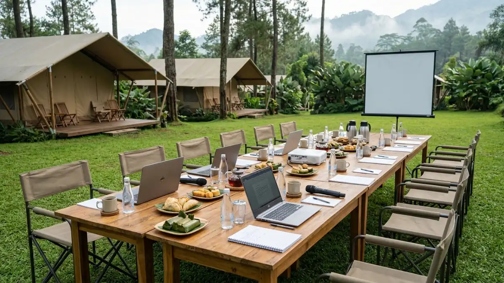

Ilustrasi: Rincian komponen biaya sewa venue glamping meeting di Batu yang perlu diketahui panitia sebelum membandingkan penawaran.
Ilustrasi: Rincian komponen biaya sewa venue glamping meeting di Batu yang perlu diketahui panitia sebelum membandingkan penawaran.
Biaya sewa venue glamping meeting di Batu bergantung pada jumlah peserta, durasi, konsumsi, dan fasilitas tambahan, sehingga tarif pasti hanya bisa dipastikan lewat penawaran tertulis.
- Biaya venue glamping meeting dihitung dari paket per orang atau sewa area per hari, lalu ditambah konsumsi dan perlengkapan.
- Tarif dipengaruhi musim, jumlah peserta, durasi, dan fasilitas yang dipilih.
- Kota Batu menerima sekitar 9,7 juta wisatawan pada 2025, sehingga tanggal ramai perlu diantisipasi.
- Penawaran tertulis dengan isi paket yang jelas adalah cara paling aman membandingkan harga.
- Apa yang dimaksud dengan biaya sewa venue glamping meeting?
- Berapa biaya sewa venue glamping meeting di Batu pada 2026?
- Apa saja komponen yang membentuk biaya venue glamping untuk meeting?
- Faktor apa yang membuat biaya venue glamping meeting naik atau turun?
- Bagaimana skema harga paket per orang dan sewa area bekerja?
- Siapa yang cocok memakai glamping sebagai venue meeting?
- Apa kelebihan dan batasan meeting di glamping dibanding ruang hotel?
- Apa kesalahan umum saat menghitung biaya venue glamping meeting?
- Bagaimana cara menekan biaya venue glamping meeting tanpa mengurangi kualitas?
- Apa yang perlu ditanyakan ke pengelola sebelum menyetujui penawaran?
- Kesimpulan
- FAQ
Apa yang dimaksud dengan biaya sewa venue glamping meeting?
Biaya sewa venue glamping meeting adalah total pengeluaran untuk memakai area glamping sebagai lokasi rapat, mencakup tempat, perlengkapan, konsumsi, dan layanan pendukung selama acara berlangsung.
Venue glamping untuk meeting adalah area glamping yang disewakan sebagai tempat rapat, workshop, atau perencanaan tim, bukan hanya tempat menginap.
Glamping sendiri merupakan bentuk camping dengan fasilitas lebih nyaman, seperti tenda berkasur, listrik, dan toilet bersih.
Bagi pemesan, biaya sewa jarang berupa satu angka tunggal. Biaya itu merupakan gabungan beberapa pos pengeluaran yang perlu dirinci satu per satu. Memahami struktur ini membantu panitia membandingkan penawaran secara adil.
Kota Batu menjadi pilihan populer karena udaranya sejuk dan aksesnya relatif dekat dari Malang dan Surabaya. Banyak HRD dan panitia mencari lokasi meeting di Batu yang suasananya berbeda dari ruang rapat hotel.
Berapa biaya sewa venue glamping meeting di Batu pada 2026?
Pengelola glamping di Batu umumnya tidak memakai satu tarif tetap untuk meeting, karena harga dihitung dari paket per orang atau sewa area per hari.
Pengelola jarang memasang angka baku karena kebutuhan setiap meeting berbeda. Tarif dapat dihitung per orang, per tenda, atau per area untuk satu hari penuh.
Sebagai gambaran skala permintaan, Dinas Pariwisata Kota Batu mencatat sekitar 9,7 juta kunjungan wisatawan sepanjang 2025.
Pada 2026, data Dinas Pariwisata yang dilaporkan RRI menyebut rata-rata kunjungan bulanan Januari sampai Maret 2026 sekitar 432.000 wisatawan. Arus wisatawan sebesar ini membuat pengelola menyesuaikan harga dan ketersediaan menurut tanggal.
Sebagai pembanding harga dasar, situs Batu Camping mencantumkan paket camping mulai dari Rp250 ribu. Angka itu untuk kebutuhan camping umum dan bukan tarif meeting.
Apa saja komponen yang membentuk biaya venue glamping untuk meeting?
Komponen biaya venue glamping untuk meeting meliputi sewa area, tenda atau ruang pertemuan, listrik, konsumsi, peralatan presentasi, parkir, dan biaya tambahan.
Setiap pos sebaiknya diminta dalam rincian terpisah agar tidak ada biaya tersembunyi. Pos yang umum muncul adalah sebagai berikut.
- Sewa area atau tenda meeting, dihitung dari lokasi, kapasitas, dan durasi pemakaian.
- Listrik dan penerangan untuk laptop, proyektor, dan lampu malam hari.
- Konsumsi, seperti makan siang, coffee break, dan minuman hangat.
- Peralatan presentasi, seperti proyektor, layar, dan sound system, bila tersedia.
- Parkir dan akses untuk kendaraan pribadi maupun bus.
- Biaya tambahan, seperti kayu bakar, sewa alat BBQ, atau perpanjangan jam.
Batu Camping menampilkan fasilitas berupa toilet, mushola, area BBQ, kantin, listrik di tiap blok, dan keamanan di halaman fasilitas Batu Camping. Untuk daftar yang lebih spesifik bagi rapat, baca panduan fasilitas venue glamping untuk meeting.
Faktor apa yang membuat biaya venue glamping meeting naik atau turun?
Biaya venue glamping meeting naik pada musim liburan, akhir pekan, dan jumlah peserta besar, serta bisa turun pada hari kerja dengan paket yang disederhanakan.
Waktu pemesanan sangat berpengaruh terhadap harga. Dinas Pariwisata Kota Batu mencatat 362.869 kunjungan wisatawan selama libur sekolah 2026 hingga 12 Juli, dengan okupansi hotel hingga 90 persen. Saat permintaan setinggi itu, pengelola cenderung menaikkan harga atau membatasi pilihan tanggal.
Selain musim liburan, faktor lain meliputi jumlah peserta, lama acara, jenis konsumsi, kebutuhan tenda menginap, dan layanan khusus seperti dekorasi atau dokumentasi. Meeting pada hari kerja umumnya lebih fleksibel dalam harga dan jadwal.
Strategi memilih tanggal dibahas lebih lengkap di cara booking glamping untuk meeting dan waktu terbaiknya.
Bagaimana skema harga paket per orang dan sewa area bekerja?
Skema paket per orang menghitung harga berdasarkan jumlah peserta, sedangkan sewa area menghitung harga lokasi per hari lalu menambahkan konsumsi dan perlengkapan secara terpisah.
Pada skema paket per orang, total biaya adalah tarif per orang dikalikan jumlah peserta, ditambah biaya tambahan bila ada.
Skema ini mudah dibandingkan antar pengelola dan cocok untuk tim kecil sampai menengah yang menginginkan semuanya diurus satu pihak.
Pada skema sewa area, pemesan membayar lokasi untuk satu hari, lalu membeli konsumsi dan perlengkapan sesuai kebutuhan. Skema ini lebih fleksibel untuk rombongan besar atau panitia yang membawa katering sendiri.
Apa pun skemanya, tanyakan apakah katering dari luar diperbolehkan dan apakah ada biaya tambahan untuk itu. Pertanyaan ini sering menentukan skema mana yang lebih hemat.

Ilustrasi: Rincian pos pengeluaran biaya sewa venue glamping meeting yang transparan memudahkan panitia menyusun anggaran.Siapa yang cocok memakai glamping sebagai venue meeting?
Glamping cocok untuk tim kecil sampai menengah, komunitas, dan perusahaan yang ingin rapat strategi, evaluasi, atau perencanaan di suasana alam yang lebih santai.
Kelompok yang paling sering diuntungkan adalah tim HRD yang menyusun program kerja tahunan, startup yang mengadakan evaluasi kuartalan, komunitas yang menggelar musyawarah, dan sekolah yang merencanakan kegiatan. Suasana terbuka membantu peserta lebih rileks sehingga diskusi terasa lebih cair.
Glamping kurang cocok untuk acara dengan kebutuhan audiovisual kompleks, ruang tertutup kedap suara, atau protokol korporasi yang sangat ketat. Dalam kasus itu, ruang rapat hotel atau gedung pertemuan biasanya lebih sesuai.
Mengenali jenis acara sejak awal membantu panitia memilih venue yang tepat dan menghindari pengeluaran untuk fasilitas yang tidak diperlukan.
Apa kelebihan dan batasan meeting di glamping dibanding ruang hotel?
Meeting di glamping unggul pada suasana alam dan fokus tim, tetapi memiliki batasan pada cuaca, sinyal, dan kapasitas peralatan presentasi dibanding ruang rapat hotel.
Kelebihan utama glamping adalah suasana yang segar, minim gangguan perkotaan, dan peluang menggabungkan rapat dengan kegiatan santai seperti BBQ atau api unggun. Kombinasi ini sering memperkuat kebersamaan tim.
Batasannya perlu dihitung sejak awal. Hujan dapat mengganggu sesi luar ruang, sinyal seluler di area pegunungan bisa berbeda tiap lokasi, dan daya listrik harus cukup untuk perangkat presentasi.
Susunan acara yang rapi mengurangi risiko tersebut. Contoh pembagian sesi tersedia di rundown meeting di glamping untuk kantor satu hari penuh.
Apa kesalahan umum saat menghitung biaya venue glamping meeting?
Kesalahan paling umum dalam menghitung biaya venue glamping meeting adalah membandingkan harga tanpa menyamakan isi paket, jumlah jam, dan layanan yang sudah termasuk.
Beberapa kesalahan lain yang sering terjadi adalah sebagai berikut.
- Hanya melihat tarif dasar tanpa menanyakan biaya konsumsi dan perlengkapan.
- Tidak menyiapkan rencana cadangan untuk hujan sehingga harus membayar tambahan mendadak.
- Menyepakati harga secara lisan tanpa konfirmasi tertulis.
- Salah memperkirakan jumlah peserta sehingga tenda atau konsumsi kurang.
- Lupa menanyakan jam mulai dan jam selesai yang berlaku pada paket.
Setiap kesalahan di atas dapat dicegah dengan satu kebiasaan sederhana, yaitu meminta rincian tertulis dan membandingkan dua atau tiga penawaran dengan format yang sama.
Bagaimana cara menekan biaya venue glamping meeting tanpa mengurangi kualitas?
Biaya venue glamping meeting dapat ditekan dengan memilih hari kerja, memperkirakan jumlah peserta secara akurat, dan membeli hanya fasilitas yang benar-benar dipakai selama rapat.
Langkah praktis yang bisa dilakukan panitia adalah sebagai berikut.
- Pilih hari kerja di luar libur panjang dan libur sekolah.
- Kunci jumlah peserta sedekat mungkin dengan hari acara.
- Pilih paket sesuai kebutuhan, misalnya tanpa menginap bila rapat cukup satu hari.
- Tanyakan potongan harga untuk rombongan atau pemesanan jauh hari.
- Sederhanakan konsumsi, misalnya satu makan siang dan satu coffee break.
Penghematan terbaik datang dari perencanaan, bukan dari memangkas fasilitas inti. Listrik, tempat berteduh, dan toilet yang memadai tetap harus tersedia agar rapat berjalan lancar.
Apa yang perlu ditanyakan ke pengelola sebelum menyetujui penawaran?
Sebelum menyetujui penawaran, tanyakan ke pengelola glamping tentang isi paket, kapasitas peserta, kebijakan hujan, jam penggunaan, biaya tambahan, dan aturan pembayaran uang muka.
Daftar pertanyaan berikut membantu panitia memeriksa penawaran secara menyeluruh.
- Apa saja yang sudah termasuk dalam harga, dan apa yang dihitung terpisah?
- Berapa jumlah peserta maksimal untuk area yang disewa?
- Apa kebijakan jika hujan atau cuaca buruk pada hari acara?
- Jam berapa area boleh dipakai dan kapan harus dikosongkan?
- Bagaimana ketentuan uang muka dan penjadwalan ulang?
Kesimpulan
- Hitung biaya dari beberapa pos, yaitu area, konsumsi, perlengkapan, dan biaya tambahan.
- Bandingkan penawaran dengan format dan isi paket yang sama.
- Hindari musim libur bila anggaran terbatas, dan pilih hari kerja bila memungkinkan.
- Minta konfirmasi tertulis sebelum membayar uang muka.
FAQ